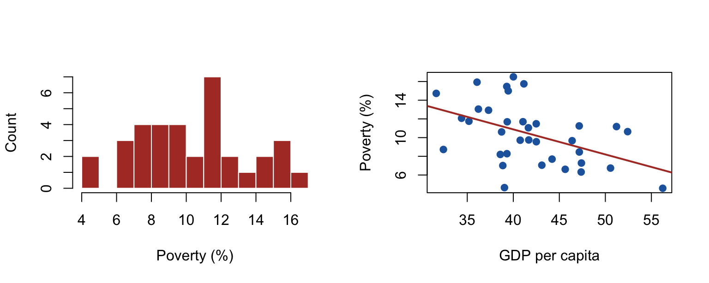
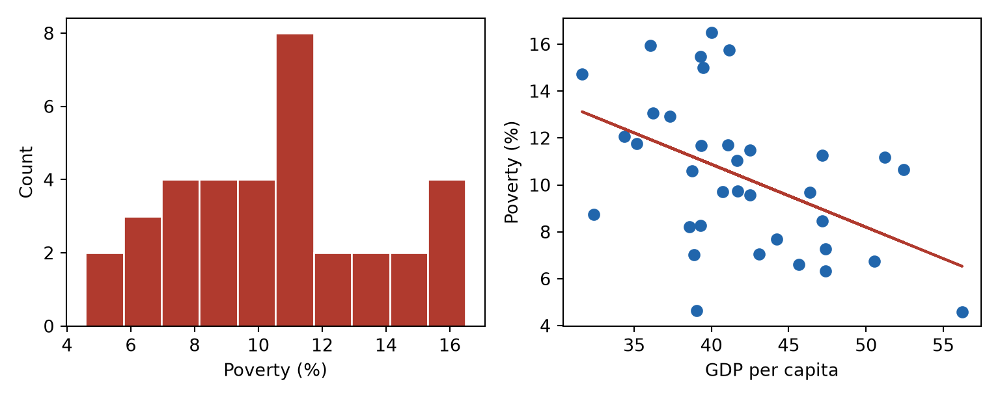
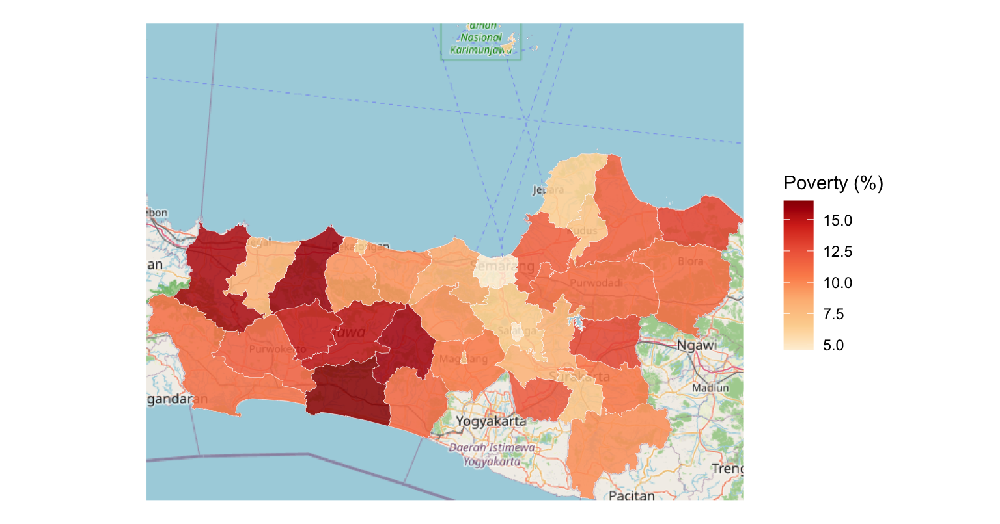
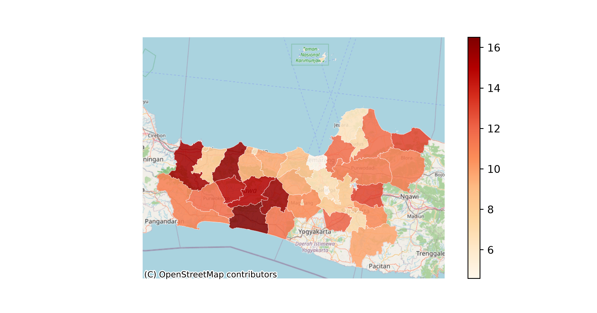

library(dplyr); library(ggplot2); library(knitr)
df <- read.csv("../data/data_kemiskinan_jateng.csv")
df23 <- df[df$tahun == 2023, ]Data Analysis with Quarto
Descriptive statistics · plotting · linear regression · geostatistics
🌐 Versi Bahasa Indonesia: baca dalam Bahasa Indonesia
This page shows real analysis — run straight from the data — in both R and Python. Case study: poverty across 35 districts of Central Java (data/data_kemiskinan_jateng.csv). Copy the code and run it on your machine.
1. Descriptive statistics
Summaries of each variable: central tendency (mean, median) and spread (standard deviation, range).
vars <- c("kemiskinan", "pdrb_kapita", "inflasi", "ipm")
ringkas <- data.frame(
Variable = vars,
Mean = sapply(df23[vars], mean), Median = sapply(df23[vars], median),
SD = sapply(df23[vars], sd),
Min = sapply(df23[vars], min), Max = sapply(df23[vars], max))
kable(ringkas, digits = 2, row.names = FALSE)| Variable | Mean | Median | SD | Min | Max |
|---|---|---|---|---|---|
| kemiskinan | 10.37 | 10.61 | 3.23 | 4.58 | 16.50 |
| pdrb_kapita | 41.88 | 41.05 | 5.66 | 31.63 | 56.23 |
| inflasi | 2.69 | 2.67 | 0.46 | 1.84 | 3.52 |
| ipm | 79.39 | 79.17 | 1.92 | 76.20 | 85.10 |
import pandas as pd
df = pd.read_csv("../data/data_kemiskinan_jateng.csv")
df23 = df[df["tahun"] == 2023]
df23[["kemiskinan","pdrb_kapita","inflasi","ipm"]].describe().round(2) kemiskinan pdrb_kapita inflasi ipm
count 35.00 35.00 35.00 35.00
mean 10.37 41.88 2.69 79.39
std 3.23 5.66 0.46 1.92
min 4.58 31.63 1.84 76.20
25% 7.95 38.80 2.35 77.87
50% 10.61 41.05 2.67 79.17
75% 11.91 46.02 3.10 80.84
max 16.50 56.23 3.52 85.102. Plotting
Visualization reveals the distribution (histogram) and relationships (scatter).
par(mfrow = c(1, 2))
hist(df23$kemiskinan, breaks = 10, col = "#b03a2e", border = "white",
main = "", xlab = "Poverty (%)", ylab = "Count")
plot(df23$pdrb_kapita, df23$kemiskinan, pch = 19, col = "#2166ac",
xlab = "GDP per capita", ylab = "Poverty (%)")
abline(lm(kemiskinan ~ pdrb_kapita, data = df23), col = "#b03a2e", lwd = 2)
import numpy as np, matplotlib.pyplot as plt
fig, ax = plt.subplots(1, 2, figsize=(8, 3.2))
ax[0].hist(df23["kemiskinan"], bins=10, color="#b03a2e", edgecolor="white")
ax[0].set_xlabel("Poverty (%)"); ax[0].set_ylabel("Count")
ax[1].scatter(df23["pdrb_kapita"], df23["kemiskinan"], color="#2166ac")
m, b = np.polyfit(df23["pdrb_kapita"], df23["kemiskinan"], 1)
ax[1].plot(df23["pdrb_kapita"], m*df23["pdrb_kapita"] + b, color="#b03a2e")
ax[1].set_xlabel("GDP per capita"); ax[1].set_ylabel("Poverty (%)")
plt.tight_layout(); plt.show()
3. Multiple linear regression
Model poverty as a function of several predictors. Watch the sign of each coefficient (direction), the p-value (significance), and R² (explained variance). We use the 2019–2023 panel (175 observations).
model <- lm(kemiskinan ~ pdrb_kapita + inflasi + ipm + pengangguran, data = df)
koef <- summary(model)$coefficients[, c("Estimate", "Pr(>|t|)")]
rownames(koef) <- c("Intercept","GDP per capita","Inflation","HDI","Unemployment")
kable(koef, col.names = c("Coefficient", "p-value"), digits = 3)| Coefficient | p-value | |
|---|---|---|
| Intercept | 98.355 | 0.000 |
| GDP per capita | -0.123 | 0.001 |
| Inflation | 0.198 | 0.112 |
| HDI | -1.077 | 0.000 |
| Unemployment | 0.235 | 0.031 |
cat(sprintf("R-squared = %.3f", summary(model)$r.squared))R-squared = 0.533import statsmodels.formula.api as smf
model = smf.ols("kemiskinan ~ pdrb_kapita + inflasi + ipm + pengangguran", data=df).fit()
koef = pd.DataFrame({"Coefficient": model.params, "p-value": model.pvalues}).round(3)
koef.index = ["Intercept","GDP per capita","Inflation","HDI","Unemployment"]
print(koef) Coefficient p-value
Intercept 98.355 0.000
GDP per capita -0.123 0.001
Inflation 0.198 0.112
HDI -1.077 0.000
Unemployment 0.235 0.031print(f"R-squared = {model.rsquared:.3f}")R-squared = 0.533Reading it: a coefficient’s sign is the direction (e.g. a negative HDI coefficient ⇒ higher HDI, lower poverty); p-value < 0.05 ⇒ significant; R² = share of variance explained. A low R² for this simple model is expected — panel data often needs fixed effects or spatial regression (see the book). That’s the point of being reproducible: swap the model, re-render, compare.
4. Geostatistics
Spatial data carries an extra message: do poor districts cluster? We map the distribution, then test for spatial autocorrelation with Moran’s I.
Choropleth map
library(sf); library(maptiles); library(tidyterra)
geo <- st_transform(st_read("../data/jateng.geojson", quiet = TRUE), 3857)
peta <- merge(geo, df23, by = "wilayah", all.x = TRUE)
latar <- get_tiles(peta, provider = "OpenStreetMap", zoom = 8, crop = TRUE)
ggplot() + geom_spatraster_rgb(data = latar) +
geom_sf(data = peta, aes(fill = kemiskinan), color = "white", linewidth = 0.1, alpha = 0.85) +
scale_fill_distiller(palette = "OrRd", direction = 1, name = "Poverty (%)") + theme_void()
import geopandas as gpd, contextily as ctx
g = gpd.read_file("../data/jateng.geojson")
pmap = g.merge(df23, on="wilayah", how="left").to_crs(3857)
ax = pmap.plot(column="kemiskinan", cmap="OrRd", legend=True, alpha=0.85,
edgecolor="white", linewidth=0.3, figsize=(8, 4.2))
ctx.add_basemap(ax, source=ctx.providers.OpenStreetMap.Mapnik)
ax.set_axis_off(); plt.show()
Spatial autocorrelation — Moran’s I
A positive, significant Moran’s I ⇒ similar values sit next to each other (clustering).
library(spdep)
nb <- poly2nb(peta) # neighbours (queen contiguity)
w <- nb2listw(nb, style = "W") # spatial weights
mt <- moran.test(peta$kemiskinan, w)
cat(sprintf("Moran's I = %.3f (p = %.4f)", mt$estimate[1], mt$p.value))Moran's I = 0.294 (p = 0.0038)from libpysal.weights import Queen
from esda.moran import Moran
w = Queen.from_dataframe(pmap, use_index=False); w.transform = "r"
mi = Moran(pmap["kemiskinan"].values, w)
print(f"Moran's I = {mi.I:.3f} (p = {mi.p_sim:.4f})")Moran's I = 0.294 (p = 0.0080)Interpretation: if Moran’s I is positive and significant, poverty clusters spatially — there are poverty “pockets.” Follow up with LISA (local clusters) and spatial regression if needed (see the book’s Spatial Statistics chapter).
Next steps
- 📘 Book “Quarto untuk Skripsi” — classical assumption tests, panel data, LISA, spatial regression (Indonesian): https://firmanhadi21.github.io/thesis-with-quarto/
- 🧪 Back to the hands-on tutorial.